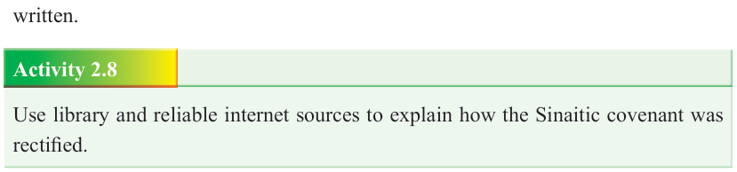

Form Two
Tanzania Institute of Education (TIE)


Bible Knowledge
35

Then Moses took the blood in the bowl and sprinkled on the people. Finally, God called Moses and gave him the stone tablets on which the Ten Commandments were written.
Activity 2.8
Use library and reliable internet sources to explain how the Sinaitic covenant was rectified.
Apostasy and punishment
Apostasy is an act of abandoning a set of beliefs or is often considered as the turning away from one’s belief in God. However, the act of worshiping curved images or sculptured gods is called idolatry. The Israelites were supposed to worship God alone, the one who took them out of slavery in Egypt. Consequently, and contrary to the agreed covenant, the Israelites made a golden calf and worshipped it instead of worshipping the Lord (Exodus 32:1-20). This problematic apostasy took place when Moses went up to the mountain to consult the Lord God.
It was in the absence of Moses that Aaron was forced to make a god for them who would be their leader. Materially, the men of Israel used the golden earrings from their wives and daughters to fashion a golden calf whom they considered to be their god. To it they said “These are your gods, o Israel, who brought you out of the land of Egypt” (Exodus 32:8). They built an altar to it and offered to it burning offering.
By doing this they broke the covenant which God made with them. The people abandoned the true God and turned to false gods (a golden calf - a god of their hands). However, this event shows how human beings are usually quick to change their mind from good to evil and how quickly humankinds forget God’s provisions.
This apostasy was a sin committed against the first Commandment.
One might ask: why a golden calf and not any other image? The reason is that, the ancient people lived in the Middle East were farmers and pastoralists who used the images of calf or bull as a symbol of force and fertility. Thus, the religious people of Israel believed that performing rituals using this image would get them plentiful harvest, crops, and would enable them to grow the number of their cattle.